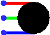

| Biblioteca: | Entrada/Saída |
| Introdução: | 2.7.1.11 (fork) |
| Aparência: |  |
Cada entrada corresponde a uma cor (VERMELHO, VERDE, AZUL), o LED RGB exibirá uma cor formada pela composição pelos valores de cada entrada (multi-bits) ou combinará as cores correspondentes a uma única entrada predominante (bit único).
Um LED RGB tem três entradas, cada pino corresponde a uma cor (VERMELHO, VERDE, AZUL) e cada uma pode ser uma entrada de 1-bit ou de 7-bits.
Quando o componente for selecionado ou estiver sendo incluído,
as teclas com setas poderão alterar o seu atributo Direção
.
Nenhum.
Permite que o rótulo associado ao componente possa ser editado.